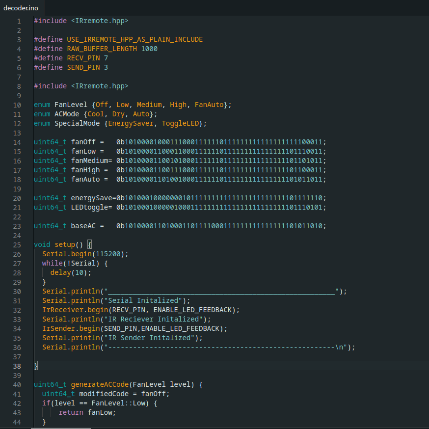

-
General AR/VR Experience
- Seamless Access: Web-based AR/VR launches instantly via QR code from the Psyche Launchpad without requiring app downloads or personal data.
- Accessible UX: Bite-sized, single-user educational modules designed for the public, featuring on-demand contextual gesture instructions.
-
Psyche Mission Satellite Experience
- Mission Progress Tracker: Features a real-time countdown to arrival and an explorable 3D spacecraft model tracking the journey to Psyche 16.
- Spacecraft Exploration: Interactive 3D inspection that uses visual cues (pulsing highlights) to guide users through discovering and learning about onboard instruments.
- Interactive Timeline: Navigable milestone tracker allowing users to explore critical mission events, from launch through future instrument deployments.
The Psyche mission demands high informational precision, I summarized research papers and established frameworks and libraries for the project.
-
Research & Technical Strategy
- AR Technology Evaluation: Researched APIs, libraries, and frameworks, documenting pros/cons to drive the project's technical architecture.
- Scientific Research: Synthesized 13+ NASA Psyche research papers—covering mission objectives, geology, and satellite operations—to ensure scientific accuracy across the project.
-
UX/UI & System Design
- High-Fidelity Mockups: Designed accessible, user-tested UI/UX mockups for three core AR experiences (Detective, Satellite, and Lore/Astronomer).
- Use Case Architecture: Developed UML diagrams to map user interactions, logic flows, and system responsibilities.
-
Technical Documentation
- Experience Design Documents (EDDs): Defined the narrative, mechanics, and user flows to establish the creative direction for the sprint.
- Requirements Extraction: Translated complex design concepts and scientific research into actionable, developer-ready requirements and info sheets.
Driven by the mandate to make the Psyche Satellite experience universally accessible, I designed and implemented a suite of user-controlled visual enhancements.
-
High-Contrast OptimizationDesigned custom UI themes to ensure strict legibility standards and support users with visual impairments.
-
Dynamic Light & Dark ModesIntegrated adaptable color schemes to reduce eye strain and accommodate diverse viewing environments.
-
Centralized Customization HubPrototyped and developed an intuitive settings menu, empowering users to seamlessly tailor their AR experience to their needs.
To bring the Psyche mission to life, I architected a data-driven experience that translates complex spacecraft telemetry into accessible, real-time mission progress on the homepage.
-
JPL Horizons API IntegrationEngineered a pipeline to extract and parse live Ephemeris data from the Horizons API, translating raw orbital telemetry into precise distance figures.
-
Client-Side Data ArchitectureGenerated a structured, localized XML database to manage and serve satellite distance data efficiently to the frontend interface.
-
Mission Phase VisualizationDeveloped dynamic UI components to consume the XML data, allowing users to seamlessly track the satellite's journey and explore distinct mission phases.
To make the Augmented Reality experience inclusive and visually immersive, I implemented system-wide accessibility themes and refined the 3D environmental UI components.
-
System-Wide Accessibility ThemingEngineered dynamic theming architecture to apply high-contrast, light, and color-blind accessible themes across all interactive AR pop-ups and buttons.
-
Persistent User PreferencesEnsured user accessibility settings translated seamlessly across the entire application, dynamically adapting interface components to meet specific user needs.
-
3D Environment RefinementEnhanced the visual cohesion of the virtual space by upgrading the Skybox floor, bridging the gap between functional UI and an immersive 3D aesthetic.
To ensure the experience was highly educational and intuitive for users of all ages and cognitive abilities, I overhauled the content strategy, integrated multimedia elements, and optimized the backend data delivery.
-
Information Architecture & Content StrategyRestructured complex technical data for the Mission and Instruments sections into an accessible "What, Why, and How" framework to maximize user comprehension across diverse age groups.
-
Multimedia IntegrationEnriched the educational phases with contextual images and videos, supporting visual learners and increasing overall user retention and engagement.
-
Scalable Data ManagementRe-engineered content delivery by transitioning hardcoded phase data into a structured JSON architecture, improving system scalability and maintaining consistency across the application.
-
UX/UI Quality AssuranceRefined user flows and interface components to guarantee a polished, highly accessible, and confident user experience for all audiences.